本文对GAN进行更加深入的探讨，主要参考哔哩哔哩-李宏毅深度学习2017视频的讲解。
1. 统一架构-FGAN
1.1 f-divergence
这一章节是为了说明GAN中描述$P_G$和$P_{data}$两个分布差异不一定非要用JS divergence，还有其他的divergence可以替代。
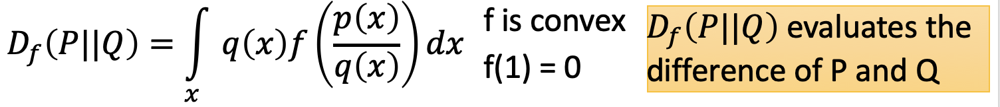
其中P和Q表示两个分布，$p(x)$和$q(x)$是采样出来的x的可能性。f是一个凸函数，并且其极值是$f(1)=0$，$D_f(P||Q)$衡量PQ两个分布之间的差异。
如果$p(x)=q(x)$，代入等式可得$D_f(P||Q)=0$；
当$p(x)!=q(x)$，$D_f(P||Q) \geq f(\int \limits_xq(x) \frac {p(x)}{q(x)})=f(x)=0$
当P和Q两个同分布时，$D_f(P||Q)$有最小值0。
当然f函数可以取很多形式，如下所示
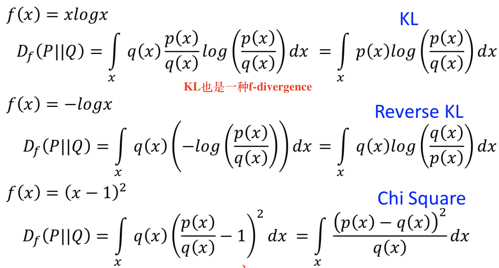
1.2 Fenchel Conjugate
细节内容见凸优化:Jensen不等式-共轭函数-Fenchel不等式
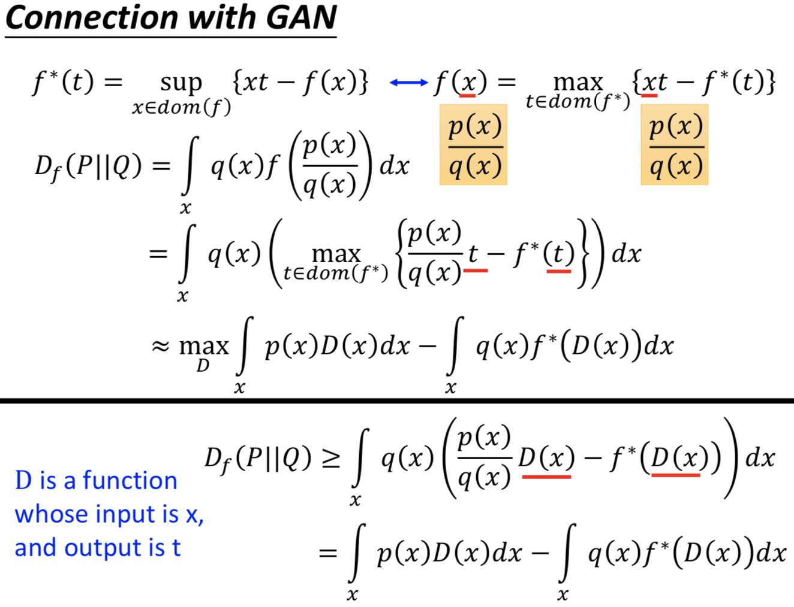
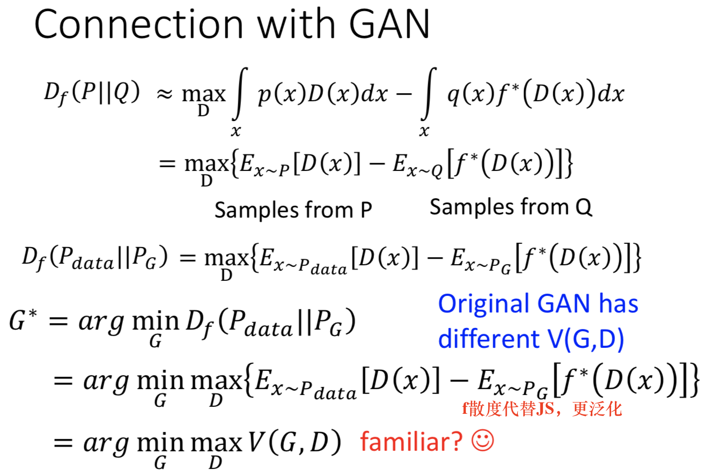
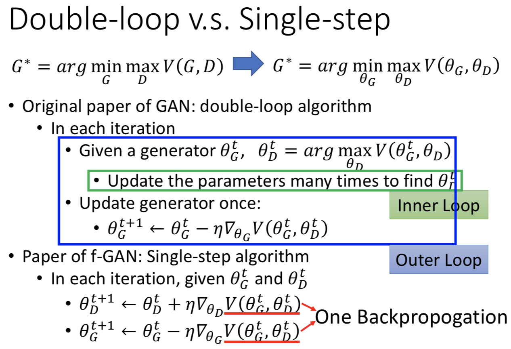
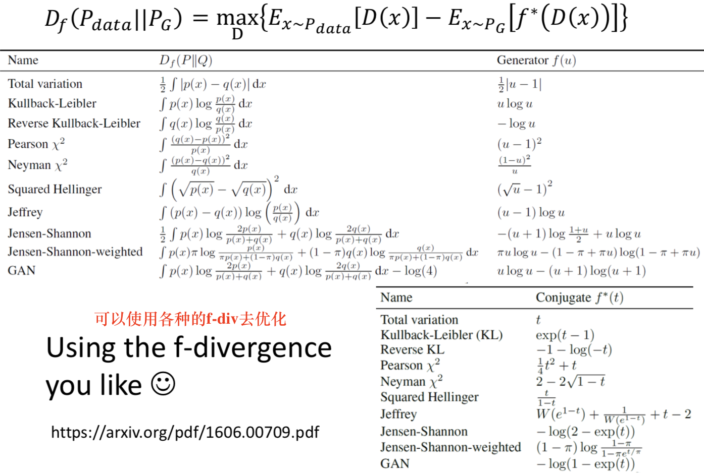
2. WGAN
对于传统的GAN来说，选定特定的Divergence度量函数之后，就开始训练使得两个分布的差异尽可能接近。但是使用f-Divergence也会有很多的问题，比如最严重的问题就是当两个分布之间完全没有重叠时，分布间距离的大小并不会直接体现在Divergence 上，这对于基于迭代的优化算法是致命的。
WGAN与传统的GAN却别就是度量分布差异的方式不用，WGAN使用Earth mover’s distance（EMD），顾名思义就是把一个分布变成另一个分布需要花费的最小力气。
2.1 Earth Mover’s Distance
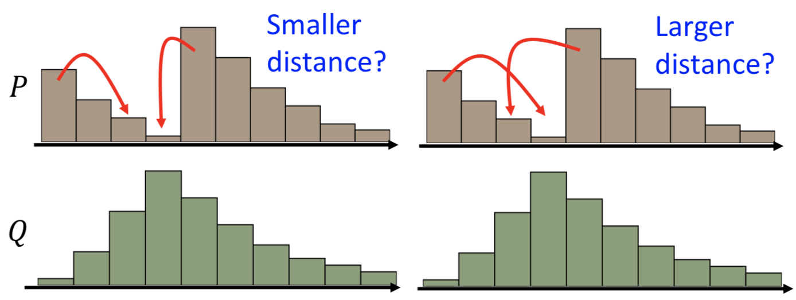
如上图图所示，如何把P分布经过’搬运’变成Q分布，并且使得’搬运’的代价最小，显然有很多方法取移动，那么如何评估’搬运’的代价大小呢，方法很多，如果我们假定衡量代价大小的标准是”移动的数量”或者”移动的平均距离”那么这两个移动方案肯定能分出优劣的。
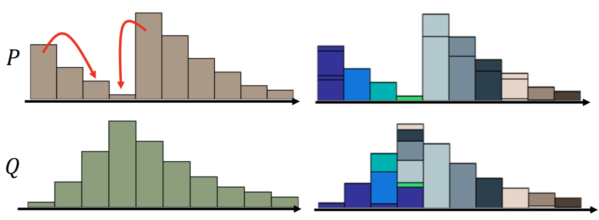
当我们用分布$Q$上不同颜色的色块对应$P$的相应位置，就可以将最好的移动方案化成上面的样子。为了便于形式化定义，我们将这个变化画成一个矩阵，如下图：
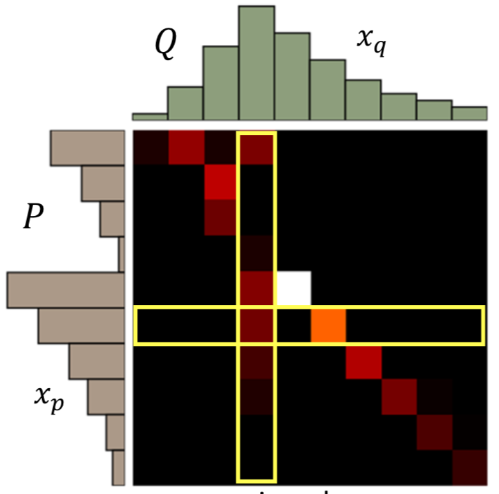
矩阵内的红色色块代表从$P$分布到$Q$分布对应位置’搬运’的量。
$\gamma$’搬运’方法的平均移动距离表示为：
Earth Mover’s Distance指的是上述所有方案中平均移动距离最小的那个方案：
为什么可以说EMD的方法比JSD的方法好呢，我们可以从下面的图可以看出：
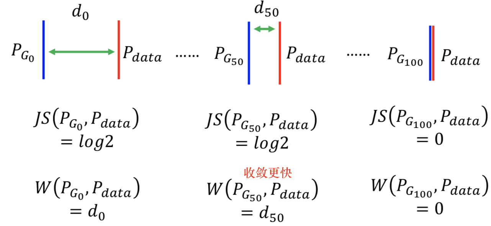
在前50轮训练中，JSD的值一直是$log2$，不能很好的衡量两个分布的差异；而EMD的值可以一直的变化，这样收敛的速度就相对较快了。
2.2 Related to GAN
由上节内容知 F-Divergence定义为：
$D_f(P_{data}||P_G) = \max \limits_{D} \lbrace E_{x\sim P_{data}}[D(x)]-E_{x \sim P_{G}}[f^*(D(x))] \rbrace$
EMD也可以类似的表示出来：
$W(P_{data},P_G)=\max \limits_{x \sim 1-Lipschitz} \lbrace E_{x \sim P_{data}}[D(x)]-E_{x \sim P_G}[D(x)] \rbrace$
公式中$1-Lipschitz$表示一个函数集，当$f$是一个Lipschitz函数时，它应该满足$||f(x_1)-f(x_2)||\leq K||x_1-x_2||$。当$K=1$时，这个函数就是$1-Lipschitz$函数，直观来说，这个限制是为了让函数的变化更加缓慢一些。如下图所示，绿色的线属于$1-Lipschitz$函数，而蓝色的线不是。
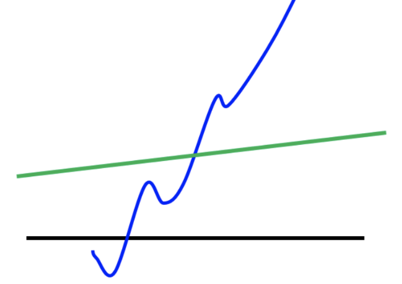
为什么要限制生成器D是$1-Lipschitz$函数呢，我们来分析一下当D不是$1-Lipschitz$函数时的情况。
我们假设有两个一维分布，$x_1$和$x_2$的距离是$d$，显然他们之间的EMD也是$d$
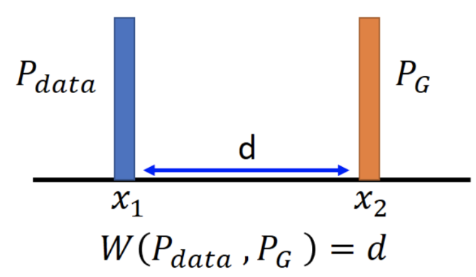
此时我们优化$W(P_{data},P_G)=\max \limits_D \lbrace E_{x \sim P_{data}}[D(x)]-E_{x \sim P_G}[D(x)] \rbrace$时，只需要$D(x_1)=+\infty$，$D(x_2)=-\infty$即可，这样判别器的区分能力太强了，训练起来很困难，很难驱使生成器提高生成分布数据质量。
如果我们加上$||D(x_1)-D(x_2)|| \leq ||x_1-x_2||=d$的限制，如果我们想要满足上面的优化目标，就可以让$D(x_1)=k+d,D(x_2)=k$，其中$k$具体是什么无所谓，关键是我们通过$d$将判别器在不同分布上的结果限制在了一个较小的范围。
这样做有什么好处呢？因为传统GAN的判别器是一个最终经过sigmoid函数输出的神经网络，它输出的曲线是S型的，在真实分布附近是1，在生成分布附近是0。当我们加上$||D(x_1)-D(x_2)|| \leq ||x_1-x_2||=d$的限制时，判别器最后一层就不再需要sigmoid函数。
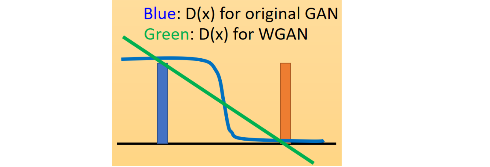
传统的判别器有饱和区（靠近真实和生成分布的地方，函数变化平缓，梯度趋于0），经过限制之后，输出成为了一条直线，训练过程得到加快。
- 判别器输出层不需再用sigmoid函数
- 换成受限的$1-Lipschitz$来实现类似sigmoid的范围限制功能
- 生成器和判别器的Loss不需再取log（因为换了Divergence方式）
如何对判别器网络添加$1-Lipschitz$的限制呢？文章中采用简单暴力的方法：截取权重，将权重限制到$[-c,c]$之间，这样限制变成了$K-Lipschitz$，如何调整$K$，只能靠多次调试了。
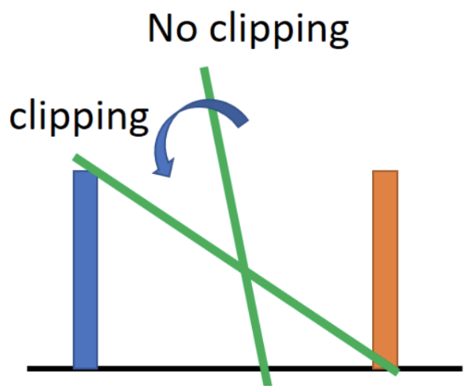
图中斜率比较陡峭的就是没有截断的函数，截断之后函数会逆时针旋转，产生$1-Lipschitz$的效果。
原始的GAN算法流程如下：
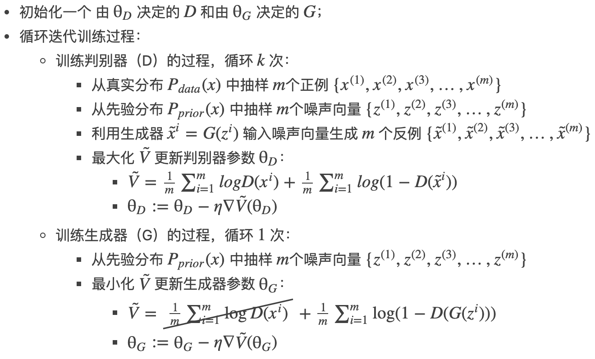
WGAN的算法如下：
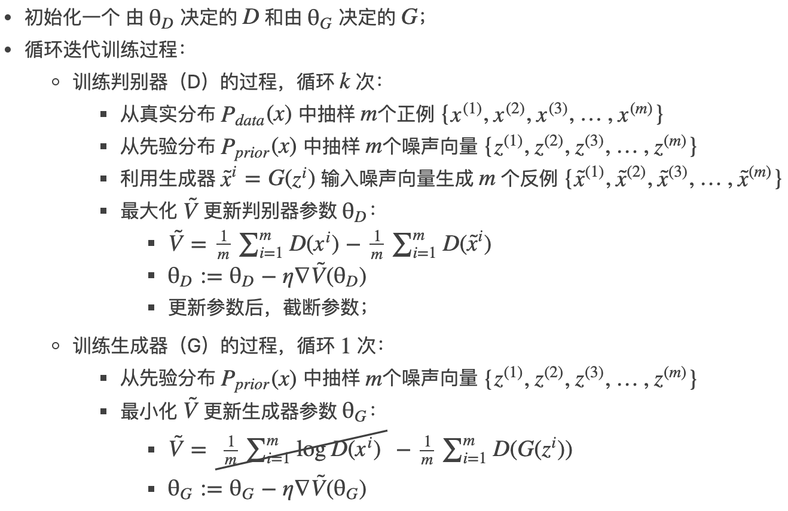
3. 改进WGAN
在上节原始的WGAN中，我们通过截取权重（Weight Clipping）的方法实现对判别器D的$1-Lipschitz$限制。$1-Lipschitz$函数有一个特性：当一个函数是$1-Lipschitz$函数时，它的梯度的范数将永远小于等于1，即:
for all x
此时WGA你的优化目标就是在$1-Lipschitz$中挑选一个函数作为判别器D。
在Improved WGAN中这样定义：（W相当于Origin GAN中的V，越大越好）
$W(P_{data},P_G)=\max \limits_D \lbrace E_{x \sim P_{data}}[D(x)]-E_{x \sim P_G}[D(x)] \rbrace -\lambda \int_xmax(0,||\nabla_xD(x)||-1)dx$
也就是说判别器的寻找范围不再是$1-Lipschitz$中的函数，而是任意函数。但是后面增加了一项惩罚项。这个惩罚项能够让选中的判别函数倾向于是一个”对输入梯度为1”的函数，这样就近似的实现了Weight Clipping的效果。
但与之前一样，求积分无法计算，我们还是采用采样的方法去加惩罚项，即：
$W(P_{data},P_G)=\max \limits_D \lbrace E_{x \sim P_{data}}[D(x)]-E_{x \sim P_G}[D(x)] \rbrace -\lambda E_{x \sim P_{penalty}}max(0,||\nabla_xD(x)||-1)dx$
也就是说，在训练过程中，从$P_{penalty}$中采样使得每一个$x$都能满足$||\nabla_xD(x)||\leq 1$
Improved WGAN设计了一个特别的$P_{penalty}$，产生过程如下：
- 从$P_{data}$中采样一个点
- 从$P_G$中采样一个点
- 将两个点连线
- 在连线上采样得到一个点，这就是从$P_{penalty}$中采样的点
重复以上过程就能不断采样得到$x \sim P_{penalty}$，最终蓝色的区域就可以看作是$P_{penalty}$
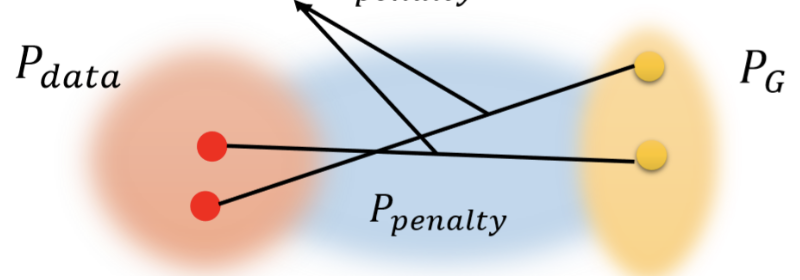
也就是说，我们采样的范围不是整个$x$，而是P_G和$P_{data}$之间的部分。
进一步整理，Improved GAN真正做的事是这样：
$W(P_{data},P_G)=\max \limits_D \lbrace E_{x \sim P_{data}}[D(x)]-E_{x \sim P_G}[D(x)] \rbrace -\lambda E_{x \sim P_{penalty}}(||\nabla_xD(x)||-1)^2 \rbrace dx$
这个惩罚项的目的是让梯度尽可能趋向于1。大于1小于1都会受到惩罚。这样的好处就像是SVM中强调最大类间距离一样，找到可以将数据划分开的最好超平面；这里要做的目的是由于可能存在多个判别器，我们想要找到的那个分类器应该有一个”最好的形状”。
一个”好”的判别器应该在$P_{data}$附近是尽可能大，在$P_G$附近尽可能的小。也就是说处于$P_{data}$和$P_G$之间的$P_{penalty}$区域应该有一个比较”陡峭的“梯度，但是这个陡峭的梯度是有限制的，最好是1。